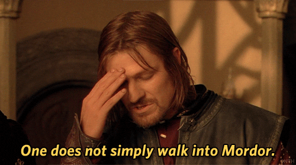

In a fantastic and unique land, a hobbit receives a magical and evil ring as a gift from his uncle that needs to be destroyed before it falls into the hands of evil. For this, the hobbit Frodo has an arduous road ahead, where he finds danger, fear and bizarre beings. By his side for the fulfillment of this journey, he can gradually count on other hobbits, an elf, a dwarf, two humans and a wizard, totaling nine beings that form the Fellowship of the Ring.
The surviving members of the Fellowship of the Ring have split into three groups. Frodo and Sam face many perils on their continuing quest to save Middle-earth by destroying the One Ring in the fires of Mount Doom. Merry and Pippin escape from the Orcs and must convince the Ents to join the battle against evil. Aragorn, Gimli and Legolas encounter a mysteriously transformed Gandalf and battle Saruman's army at Helm's Deep.

The final confrontation between the forces of good and evil as they fight for control of Middle Earth's future approaches. Sauron plans a major attack on Minas Tirith, capital of Gondor, which causes Gandalf and Pippin to go there with the intention of helping the resistance. An army is gathered by Theoden in Rohan, in yet another attempt to stop Sauron's forces. Meanwhile, Frodo, Sam and Gollum continue their journey towards Mount Doom to destroy the ring.

If you want to learn even more about the The Lord of the Rings film trilogy, check out their fandom wiki website.